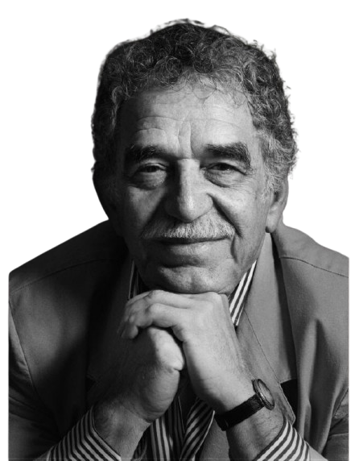

Cent'anni di solitudine: il romanzo che ha inventato un continente
Perché il capolavoro di Gabo resta il punto di riferimento ineludibile della letteratura mondiale.
12 Gennaio 2026 · 8 min lettura«La vita non è quella che si è vissuta, ma quella che si ricorda e come la si ricorda per raccontarla.»

Biografia
Gabriel José de la Concordia García Márquez, universalmente conosciuto come Gabo, è stato il padre del realismo magico nella letteratura mondiale. Nato il 6 marzo 1927 nella piccola cittadina caraibica di Aracataca, crebbe nella casa dei nonni materni ascoltando le storie fantastiche della nonna Tranquilina — racconti in cui il soprannaturale conviveva con il quotidiano come la cosa più naturale del mondo.
Quella casa piena di fantasmi benevoli, presagi e superstizioni caraibiche diventerà il seme da cui germoglierà l'intero universo di Macondo. Il nonno, colonnello in pensione, gli raccontava della guerra civile con la stessa naturalezza con cui la nonna parlava dei morti che tornavano a sedersi a tavola.
Giornalista prima che romanziere, García Márquez affinò la sua prosa nelle redazioni di Bogotá, Barranquilla e Cartagena. Il suo apprendistato nel reportage gli insegnò a osservare la realtà con l'occhio del cronista, per poi trasfigurarla con l'immaginazione del poeta.
Il capolavoro arrivò dopo anni di gestazione. Scritto in diciotto mesi di furore creativo nella Città del Messico — mentre la moglie Mercedes impegnava gli elettrodomestici per pagare le bollette — esplose nel 1967 come un fenomeno senza precedenti nella letteratura in lingua spagnola, vendendo oltre 50 milioni di copie e venendo tradotto in 46 lingue. L'editore argentino lo stampò con una tiratura iniziale di 8.000 copie. Si esaurì in pochi giorni.
La sua opera ha ridefinito i confini tra realtà e fantasia, dimostrando che la letteratura latinoamericana non solo poteva competere con quella europea, ma offrire una visione del mondo radicalmente nuova. Nel 1982, l'Accademia svedese gli conferì il Nobel per la Letteratura. Si presentò alla cerimonia con un liqui-liqui bianco — l'abito tradizionale caraibico — rifiutando il frac europeo. Un gesto politico, oltre che estetico.
Oltre alla narrativa, Gabo fu un instancabile attivista per la pace, amico controverso di Fidel Castro e fondatore della Fundación Nuevo Periodismo Iberoamericano, dedicata alla formazione dei giornalisti latinoamericani. Morì il 17 aprile 2014 a Città del Messico, lasciando un universo letterario che continua a crescere e germogliare nelle generazioni successive.
Bibliografia
1967 · Romanzo
1985 · Romanzo
1981 · Romanzo breve
1975 · Romanzo
1994 · Romanzo
1989 · Romanzo storico
1955 · Romanzo
2002 · Autobiografia
1970 · Reportage narrativo
1962 · Romanzo
Podcast
Viaggio nel genere che ha ridefinito la narrativa latinoamericana. 1h 24min
Rileggere il capolavoro con occhi contemporanei. 58min
Da García Márquez a Bob Dylan, i Nobel che hanno fatto discutere. 1h 12min
Bolaño, Márquez, Allende: tre visioni di un continente in fermento. 1h 05min
Anatomia del romanzo d'amore più letto del XX secolo. 1h 18min
Come un debutto può segnare il destino di un autore. 52min
Approfondimenti
Perché il capolavoro di Gabo resta il punto di riferimento ineludibile della letteratura mondiale.
12 Gennaio 2026 · 8 min letturaDa Samanta Schweblin a Mariana Enriquez, le nuove voci del fantastico latinoamericano.
28 Febbraio 2026 · 12 min letturaConversazione con il traduttore italiano sulle sfide di rendere la prosa di Macondo in un'altra lingua.
5 Marzo 2026 · 6 min letturaViaggio nei luoghi reali che hanno ispirato l'universo narrativo di García Márquez.
18 Marzo 2026 · 10 min lettura